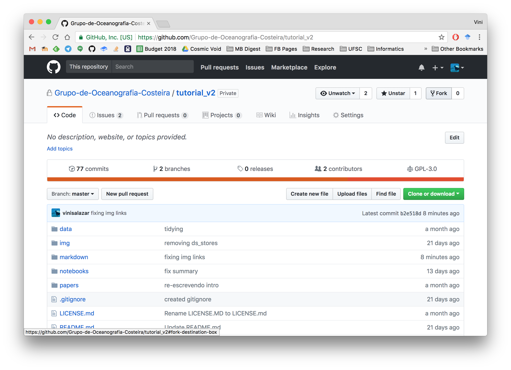
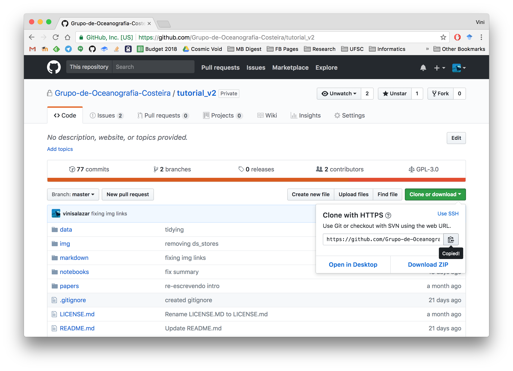
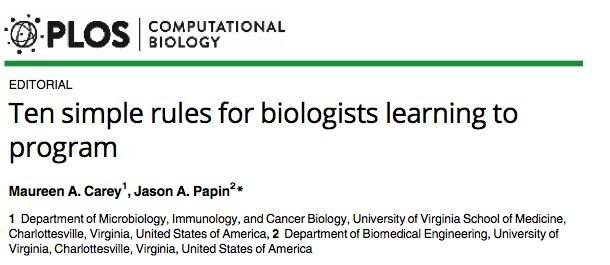

Introdução: o porquê deste curso
I.1 Apresentação
I.2 Informática cada vez mais necessária
I.3 As ferramentas
1.1 - Linha de comando: Terminal
1.2 - Editor de texto e IDE: Atom
1.3 - Linguagem de Programação: Python
Módulo 2: Bibliotecas e ambientes virtuais
2.1 - Conda: Ambientes virtuais e instalação de dependências
2.2 - Bibliotecas essenciais: Pandas, Matplotlib e Jupyter
2.3 - Analisando o conjunto Iris no Jupyter Notebook
Módulo 3: Colaboração e boas práticas
3.1 - Boas práticas em computação científica
3.2 - Documentação e controle de versão: Git e GitHub
3.3 - Como aprender programação: dicas para biólogos
Nos Módulos 1 e 2 já fomos introduzidos à uma variedade de ferramentas que serão essenciais no nosso caminho da informática. Conseguimos fazer análise e visualização do conjunto de dados "Iris" usando comandos Python, no nosso Jupyter Notebook ou na nossa interface Atom + Terminal. Vimos diversos recursos para aprender a linguagem, como baixar e instalar bibliotecas e como organiza-las em ambientes virtuais; para integrar todos esses conhecimentos, temos que nos concentrar em adotar boas práticas de computação científica.
Através de suas experiências com os workshops da Software Carpentry, Greg Wilson e colegas [1] destacaram a carência dessas práticas e elaboraram um sumário de regras gerais que cientistas podem e devem considerar adotar. O título do paper, "Práticas boas o suficiente em computação científica" (adaptado) já faz alusão ao fato de que o exercício de tais práticas não deve ser algo cansativo e perfeccionista, mas sim princípios básicos no qual devemos nos apoiar na hora de trabalhar no computador, da mesma forma que fazemos na bancada.
Isso significa que workflows computacionais devem seguir as mesmas práticas que outros projetos de laboratório, incluindo dados organizados, passos documentos e uma estruturação do projeto voltada à reprodutibilidade. Se usamos métodos computacionais para manipular nossos dados, eles devem ser descritos na literatura; A regra geral é sempre citar os softwares que foram utilizados, especialmente se há um paper descrevendo a ferramenta. No entanto, assim como um protocolo de laboratório, o processamento de dados pode variar dependendo de como a ferramenta computacional é utilizada. Imagine um ensaio enzimático: a concentração de determinado reagente pode influenciar o resultado final, certo? O mesmo acontece com ferramentas de informática: A configuração de determinados parâmetros em um software pode alterar a saída de dados, e consequentemente a informação a ser interpretada. Portanto, não basta citar apenas o método utilizado, e também como foi utilizado.
O paper de Wilson et al., fornece um guia detalhado, porém simples, de como essas práticas proporcionam um "controle de qualidade" no processo de pesquisa, visando facilitar a execução pelo próprio usuário e também garantindo sua reprodutibilidade para terceiros. Hoje em dia, é muito fácil se perder na montanha de dados e análises de qualquer projeto, por mais singelo que seja, logo fica a dica da leitura para qualquer pesquisador no século XXI. Suas recomendações se dividem nos seguintes tópicos:
(adaptação livre do artigo)
Como já foi discutido, para garantir o rigor científico de uma análise, é necessário documentar todos os passos. Assim como na ciência precisamos descrever nossa metodologia, quando estamos programando precisamos documentar nosso código. O que isso significa é que devemos explicar como nosso programa funciona, o que cada linha de código faz e como utilizar funções. Fazemos isso através de comentários.
Nos Jupyter Notebooks deste curso já vimos comentários. São linhas de código precedidas de algum caracter (em Python, # ou blocos de textos entre os caracteres ''' ou " " " que servem para iniciar e fechar tais blocos de comentários).
Imagina se formos ter que usar aquele mesmo código daqui há 6 meses? Será que a gente vai entender o que cada coisa faz? Por isso é importante adicionar comentários à medida que um arquivo de código vai acumulando linhas. Quando escrevemos programas mais complexos, a documentação não se refere somente aos comentários, mas a um conjunto de documentos que vão auxiliar usuários e desenvolvedores daquele programa. Arquivos como "README.txt", "requirements.txt" ou "LICENSE.txt" são exemplos de documentos. Documentação é um aspecto fundamental para a prática de programação, no entanto no momento podemos nos contentar com adicionar comentários úteis em nossos humildes scripts.
Uma análise realizada através de código pode ser documentada da mesma forma que um programa que já foi desenvolvido. Por exemplo, nessa página temos um workflow para análise de uma comunidade microbiana a partir de amplificação e sequenciamento do gene rRNA 16S. O arquivo é do tipo .md (MarkDown), ou seja, um arquivo de texto contendo os comandos executados no Terminal utilizando os pacotes PEAR e QIIME. Repare como as versões de cada pacote, bem como a base de dados de referência (SILVA), foi referenciada. Cada comando (ou passo do protocolo) é precedido de uma explicação e aparece exatamente como foi digitado.
Apesar de ser o suficiente para reproduzir a análise, esse documento falha em um aspecto, que é o de não printar o output de cada comando. Como já foi visto conseguimos fazer isso no Jupyter Notebook! Podemos mesclar texto em MarkDown, código com os devidos comentários e ainda podemos visualizar o output, como fizemos com o conjunto Iris!
A prática de documentação de forma distinta para cada uma dos cinco tópicos de boas práticas propostos por Greg Wilson. Nossa próxima prática importante será a de usar um programa de controle de versão.
Todos nós já passamos por aquela situação de ter vários arquivos parecidos com nomes do tipo "rascunho.doc", que viram "versaofinal.doc", depois "v_final2.doc", "v_finalcorrigida.doc", "vfinal_agora_vai.doc"
Git é um VCS, ou *version control s programa que monitora as mudanças em nossos projetos, e permite criar checkpoints em nossos arquivos e diretórios. Basicamente, nosso trabalho envolve os seguintes passos:
No quarto passo, salvar novamente, que controle de versão irá nos auxiliar. Podemos registrar o que foi alterado, quando aconteceu a mudança, e comparar o antes e depois.

Dessa forma, gerenciamos as versões do nosso projeto, como se tirássemos pequenos retratos (snapshots) de cada versão do projeto.
Para ter uma ideia melhor de como o Git funciona, siga o tutorial no site (em inglês).
Apesar de vermos como funciona no site, é interessante fazer uma demonstração local na nossa máquina. Primeiro, certifique-se que você tem o Git instalado. Vamos criar um diretório, inicializar o Git nesse diretório, criar um arquivo de texto, adiciona-lo ao nosso arquivo Git, e realizar um commit, ou seja, registrar a mudança que realizamos no nosso projeto.

A vantagem do Git é o fato de ser totalmente integrado com o GitHub. Esse site é uma plataforma extremamente popular de compartilhamento de código, aonde usuários e organizações mantém repositórios (repos), pastas contendo projetos que podem ser clonados, forkeados, e no geral compartilhados entre usuários. Assim como esse tutorial que você está lendo é mantido no GitHub, você pode (e deve) fazer upload dos seus projetos para lá. Diferente de outras plataformas em nuvem, como Dropbox ou Google Drive, o GitHub é voltado especificamente para projetos de código, sejam programas, aplicativos, bibliotecas, scripts, e muito mais. Existe uma infinidade de recursos para aprender como o GitHub funciona, como o guia Hello World! do próprio site, ou, em português, esse vídeo e este post de blog. Dê uma olhada para entender a integração entre o VCS que é o Git e a plataforma que é o GitHub.
Para entender o que é clonar ou forkear um repositório, vamos fazer isso com o repositório deste curso.

Ao clicar no botão Fork, nos criamos uma cópia deste repositório em nosso perfil do GitHub. Logo, um Fork é uma cópia idêntica do repositório que foi forkeado, no entanto agora a pessoa que criou esse fork pode modificar esse repositório da maneira que quiser.
Para que nós possamos ter esse repositório localmente, ou seja, em nossa máquina, precisamos clonar ele para nosso ambiente local. Isso é feito ali pelo botão Clone or download.

Copiando o url do repo, basta digitar no terminal o comando git clone <URL>. O repositório será clonado para uma pasta linkada através do Git com o repositório hospedado no GitHub. Para sincronizar a pasta local com a pasta remota e vice-versa, usamos os comandos git pull (remoto > local) e git push (local > remoto). Antes de fazer isso, precisamos adicionar os arquivos que que precisamos sincronizar entre elas com os comandos git add e git commit, como vimos no exemplo de Git na pasta notebooks.
A ideia de Forks é que os usuários podem ter uma cópia de um repositório de terceiros e customiza-la como quiserem, sem interferir no repo original. No entanto, o usuário pode solicitar um pull request ao dono original do repositório. Se o dono concordar com o pull request, pode incorporar aquelas mudanças ao repo original. Ou seja, o usuário solicita ao dono do repositório que ele realize um pull do seu Fork, que foi modificado.
Digamos que você encontre um bug no script que você está usando. No entanto, ao revisar o código, vê que é algo simples de consertar, como mudar a versão de uma biblioteca que está sendo importada. Você tem duas escolhas, reportar um issue na página do repositório, ou fazer um Fork, editar o código e solicitar um pull request ao dono do repositório, para que ele atualize o código do repo original com aquela correção que você fez.

Nosso curso já nos muniu de ferramentas essenciais para trilharmos o caminho da informática. Para encerrar, vamos ver algumas dicas importantes que vão além de programas ou plataformas. Recente, os pesquisadores Maureen Carey e Jason Papin publicaram um guia curto intitulado "Dez regras simples para biólogos aprendendo a programar" [2]. Fizemos uma tradução e adaptação livre do guia para nos apoiarmos.
Regra 1: Comece com o final em mente
Quando for escolher uma linguagem, foque no seu objetivo. Você quer se tornar um programador? Você quer implementar ferramentas bioinformáticas? Você quer só analisar logo esses dados? Escolha um approach e uma linguagem que se adeque ao seus objetivos de curto e longo prazo.
Regra 2: Passos de bebê são passos
Uma vez que você começou a fazer o que precisa, se concentre em uma tarefa de cada vez e aplique suas habilidades de pensamento crítico e solução de problemas. Descontrua um problema grande em pequenos passos objetivos e resolva as tarefas uma a uma.
Regra 3: Imersão é a melhor ferramenta de aprendizado
Não "costure" uma análise trocando diferentes ambientes/linguagens. Quando se está aprendendo, se uma tarefa pode ser feita toda em um único ambiente ou linguagem, faça tudo lá. Como o comentário do usuário twopi que vimos no Módulo 1 (1.3), linguagens de programação são como idiomas, e imersão é a melhor forma de as aprender.
Regra 4: Ligue para um amigo
Existem numerosos recursos onlines: tutoriais (como este!), documentação e websites de Q&A, no entanto nada substitui a ajuda de um amigo ou colega. Encontre uma comunidade de programadores, que inclua usuários iniciantes e experientes, para procurar ajuda. Peça ajuda para descontruir e interpretar código, leia o código dos outros, tentando entender cada linha. Discuta bem suas perguntas, peça por correções em seu código.
Regra 5: Aprenda como fazer perguntas
Existe uma resposta para quase tudo online, mas você precisa saber o que perguntar para conseguir ajuda. Para isso, você precisa entender o problema. Tente interpretrar as mensagens de erro, identifique cada componente da mensagem e como ele indica onde está o erro. Entender o problema é essencial, e esse processo que se chama debugging. Vários sites oferecem referências de como fazer suas perguntas, então siga essas instruções para conseguir ajuda de form mais efetiva.
Regra 6: Não reinvente a roda
A regra 6 é encontrada em outras "listas de regras para biólogos" (uma, duas, três e quatro). Use todos os recursos disponíveis para você! Tutoriais online, documentação das linguagens, código publicado, pedacinhos de código interessantes que alguém compartilhou e os seu próprio trabalho. Leia bastante para identificar esses recursos, dê os créditos apropriados. Documente bem seu código para que você consiga aproveita-lo em trabalhos futuros e possa poupar tempo.
Regra 7: Desenvolva bons hábitos desde cedo
Pesquisa computacional é pesquisa, então utilize boas práticas. Isso inclui manter um caderno de laboratório computacional [3], que deve incluir protocolos. Protocolos computacionais são scripts ou métodos, e devem incluir o código em si e como acessar tudo para implementar o código, garantindo a reprodutibilidade. Isso também envolve controle de versão para garantir a manutenção dos protocolos e cadernos.
Regra 8: prática leva à perfeição
Use conjuntos de dados (datasets) simples para praticar um problema ou análise. Como fizemos com o Iris dataset, use conjuntos pequenos e fáceis que permitam prever os resultados, mas que possuam a mesma estrutura dos seus dados. Teste sua análise usando esses conjuntos de dados como controle negativo.
Regra 9: Ensina a si mesmo
Assim como devemos fazer quando vamos ensinar alguém, devemos ser generosos com a paciência e empatia quando ensinamos a nós mesmos. Você não está sozinho em sua frustração ocasional. Aprender leva tempo, então planeja de acordo. Explora teus recursos e planeja teu aprendizado, sempre avaliando teu progresso.
Regra 10: *Just do it*
Só começe a codar. Você não consegue editar uma página em branco.
Partindo do que foi exposto nesse guia, podemos frisar alguns pontos:
Recapitulando a regra 7, desde cedo devemos adotar boas práticas! Este tutorial que você está lendo foi desenvolvido com esse fim. Uma boa referência para isso é o paper de Wilson et al [1].
É importante manter nossa máquina organizada. Quando você começar a programar, vai se encontrar baixando muitos pacotes, bibliotecas e afins, bem como criando pastas para seus projetos. Como o Terminal costuma abrir na home folder, uma sugestão é criar um diretório nela que vai conter todos estes tais pacotes e ferramentas de terceiros (third-party software) que você vai acabar precisando. A partir daí, você pode botar seus projetos próprios e repositórios de GitHub nessa mesma pasta ou em uma segunda (e até terceira) pasta separada. Se você estiver usando o conda como gerenciador de pacotes, a pasta "Anaconda" em sua home folder contém seus ambientes e suas respectivas bibliotecas, no entanto de qualquer forma criar uma pasta para abrigar outro software que não seja do Anaconda.
Para nossos diretórios de projeto, devemos adotar um layout de organização de pastas que funcione para nós. Por exemplo o diretório principal é pibic_fulano, descrevendo de forma simples sobre o que se trata. Nele, temos um diretório data para os dados, um imgpara imagens, um scripts para o código que foi escrito ou utilizado, um relatorio com os arquivos do relatório PIBIC em markdown, em um arquivo README em .txt ou .md dando mais detalhes sobre o conteúdo do repositório. Vamos reproduzir esse padrão para diretórios similares. Em cada um deles, é interessante criar um arquivo Git (com o comando git init) e eventualmente fazer upload para o GitHub, o que também garante um backup em nuvem! Backups são importantes. Recomenda-se três fontes de backup, sendo que uma deve ser em nuvem (GitHub, Google Drive, Dropbox), e as outras podem ser, por exemplo, seu computador e um HD externo ou flash drive. Usando o Git ou outras ferramentas. é possível manter todas as fontes sincronizadas entre si.
Wilson et al. também recomendam o seguinte protocolo para lidar com arquivos contendo dados:
pibic_fulano, poderíamos ter mais uma pasta chamada analysis com arquivos .ipynb descrevendo as análises com os dados da pasta data e o software da pasta scripts, bem como eventuais comentários.Para arquivos contendo software, podemos aproveitar mais algumas dicas deste guia:
Se refira ao paper e também à seção 3.1 para ver outras dicas nos tópicos de gestão de dados, gestão de software, colaborações, organização de projeto, monitoramento de mudanças e redação de manuscritos.
Essa dica se refere às Regras 5 e 10. Em programação, é muito comum encontrar mensagens de erro. Na verdade, elas nos ajudam! Começamos recebendo uma mensagem de erro e nem sabemos por que. Parando para a ler, conseguimos descobrir QUAL é o problema para tentar resolve-lo. As vezes mudamos uma coisinha e obtemos um erro diferente.

Apesar da Regra 4, o melhor amigo do programador será o Google, onde podemos malandramente copiar e colar nossas mensagens de erro e esperar que alguém que já teve o mesmo problema tenha conseguido resolver. Certo? Não exatamente. Como mencionado na Regra 5, devemos fazer bem nossas pesquisas, e se necessário, perguntar em sites como o Stack OverFlow, explicitando nosso problema e dando exemplos conforme o adequado.
](../img/stackover.png)
Essa é uma recomendação tão geral que deve valer para qualquer pessoa que queira trabalhar como pesquisador. Assim como na ciência, na programação e informática o inglês é de longe o idioma predominante, seja para tutoriais, documentação, nome de programas, tipos de dados e variáveis. Também é o mais difundido em fóruns de programação, livros, periódicos e os mais diversos tipos de recursos. Uma das motivações para criar esse tutorial que você está lendo foi justamente a carência de materiais em língua portuguesa. Embora existam bons recursos para aprender programação, principalmente no YouTube e em blogs, são poucos os que estão voltados à computação científica em si.
Chegamos ao fim do nosso conteúdo! Vamos fazer um sumário geral e recapitular o que aprendemos.
conda, e também como baixar e instalar bibliotecas do Anaconda Cloud ou do PyPI, utilizando pip. Criamos um ambiente com as bibliotecas Pandas, Matplotlib e Jupyter, que são bibliotecas populares de Python que permitem análise e visualização de dados (Pandas e Matplotlib) e um ambiente integrado de execução e documentação de código (Jupyter). Fizemos uso dessas biliotecas para importar e visualizar o Iris dataset.Explore as referências!
Faça um curso de Python!
Crie uma pasta com um conjunto de dados que você tenha. Tente escrever código que processe os seus dados de alguma forma. Inicialize o Git no diretório. Se você ainda não tem uma conta no GitHub, crie uma e faça upload do seu repositório.
Referências:
[1] Wilson et al, 2017. Good enough practices in scientific computing.
[2] Carey & Papin, 2018. Ten simple rules for biologists learning to program.
[3] Schnell, 2015. Ten simple rules for a computational biologist's laboratory notebook.